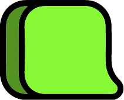

Vous êtes toujours là ?
Le jeu va recommencer si vous ne faites rien dans 20 secondes.
Est-ce que l'objet doit être conservé dans la collection d'artefacts ?
-
Cliquez à gauche: Non!
Cliquez à droite: Oui! 
-
Si vos choix correspondent à 100% avec ceux du Muséum, vous recevez une surprise !